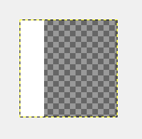

Since: 06-29-17
From: Germany |
Servus! I'm Louis Miles / Louiskovski ;D I mod games such as Mario Maker, Mario Kart DS/Wii/7, Mario 3D Land, Mario Galaxy and whatnot? |
|
Preview
|

| General information | |
|---|---|
| Name | Louis Miles (Louiskovskie) |
| User ID | 66 |
| Groups | Normal users, Super Mario Maker Hackers |
| Total posts | 46 (0.04 per day) (last post 852 days ago in New Super Mario Bros DS (Project Releases)) |
| Registered on | 06-29-17, 04:24 pm (1249 days ago) |
| Last view | 07-18-19, 05:15 pm (500 days ago) at: / |
| Total stars received | 10 [View...] From:  NightYoshi370 (2), NightYoshi370 (2),  Sm-ArtThings (1), Sm-ArtThings (1),  Lakifume (1), Lakifume (1),  Unsavory Maggot (1), Unsavory Maggot (1),  MarioMario369 (1), more... MarioMario369 (1), more... |
| Total stars given | 0 |
| Contact information | |
|---|---|
| Homepage | My Youtube Channel - https://www.youtube.com/channel/UC5a5Zm0URA-Sb0tz6Md_Itg/fee |
| Presentation | |
|---|---|
| Theme | Super Mario Bros. Underground · by NightYoshi370 & Buntendo |
| Items per page | 20 posts, 50 threads |
| Layout | bb |
| Language | Board default |
| Personal information | |
|---|---|
| Location | Germany |
| Birthday | August 8, 1999 (21 years old) |
| RPG Status |
|---|
 |
You need to be logged in to post profile comments here.
Nice to be back :) |
https://mariomods.net/thread/130-super-mario-land-2-six-golden-coins Can you fix this url?
|
Welcome back!
|
Wow, thank you ! :D
|
Happy Birthday
|
happy birthday!!
|
 Buntendo
Buntendo
Happy birthday!
|
 WillyMaker
WillyMaker
Hallo
|
 tee
tee
hey :D
|
hi
|
| I spent the mod a small update!: -Added 100-Mario Challenge Ending with Peach and/or Toad -Improved Clown Cars -Improved Magikoopa DOWNLOAD Some enemies are still uneditable (Buzzy Beetle and Bob-Omp) and will be replaced in another update ;D So... how did you fix the strange small filter on some edges ? I just followed the old video tutorial by Zachabossaloler Plays, and this worked for some reason :) Is the weird blue filter issue fixed in this release ? Also, this is looking awesome ! Jep ;D. And thank you! Honestly, this mod looks great! Good job. But why not replace the airship theme with the sky theme? The sky theme makes more sense considering the original NSMB used sky and didn't even have an airship. Still, I like the replica you made. Thank you :) Hmm, yeah i made lots of thoughts about the airship theme and used the Bob-Omb theme from the minigames. But i'm planning to add some music-themes as an Add-On, where you can download additional music tracks for the mod :) |
|
Posted on 07-31-18, 02:26 pm
in wii usmm2 wip New Super Mario Bros DS (rev. 2 by Louis Miles on 07-31-18, 03:56 pm) |
|---|
If you want, you can join our team dedicated to doing this. If you say yes, I'll ask epic_stuff Hmm, i will think about it :) I wanted to point that out, because "i will think about it" was not a very good reply. |
| Posted on 07-29-18, 02:17 pm in wii usmm2 wip Super Mario Bros All-Stars |
|---|
| Ok, mod is finished. DONE! Find the download in the main post ;D       |
|
Posted on 07-29-18, 01:36 pm
in wii usmm2 wip New Super Mario Bros DS (rev. 1 by Louis Miles on 07-29-18, 03:42 pm) |
|---|
| 1. I just replaced the normal maps with empty bitmaps, because the sprites have vertex collours applied. But my problem is, that the normal maps for the Bob-Omp and the Buzzy Beetle seem to be uneditable. Wexos Toolbox crashes when trying to load them and BFRES Tool can't replace them. 2. Ok, i think the shadows are the problem. I try to switch them off. Thank you :) |
| Posted on 07-24-18, 02:16 pm in q&a Ask your SMM hacking questions here. |
|---|
| Alright, the mod is nearing completion!: Tilesets: 90% Backgrounds: 100% StaticSkin: 80% Music: 0% Soundeffects: 0% Here are some new screenshots:   I currently have two small issues, but i'm sure they can be solved somehow :) How did you make the custom background? By editing the Static.pack. Here is a tutorial ;) How did you successfully replace NSMBU tileset by 16 bit ones ? I tried and it looks weird for some reason. Does it look like this?: This is the filter used by NSBMU tilesets, which goes out of control if it has a lower resolution. I just scaled the tilesets x4 to get it work. |
| Posted on 07-23-18, 02:59 pm in wii usmm2 wip New Super Mario Bros DS |
|---|
| Ok i could fix the DDS problem by importing the textures into Wexos Toolbox first, exporting them to dds and importing them into the model with BFRES Tool. However, i have two new issues: 1. I can't edit the Normal Maps ("NRM") for Buzzy Beetle and Bob-Omps (NSMBU). Wexos Toolbox crashes when trying to load them and BFRES Tool don't export them. 2. When importing Tilesets with Wexos Toolbox, the "FieldEnv"-objects (Brick Blocks, Note Blocks) have a weird blue filter. When using BFRES Tool to import the texture, there will be a strange small filter on some edges:  |
| Posted on 07-23-18, 02:55 pm in q&a Ask your SMM hacking questions here. |
|---|
That's weird, when I edited some of NSMBU Yoshi and Bowser skin I used the same process as other sprites and it worked, only issue was mipmaps replacements. Is this a background texture ? It's the texture for the propeller-mushroom, and i have the same issues with Goomba's and Koopa's Textures, and possibly any 2D animated Sprite from NSMBU as well.I didn't checked the textures from 3D models yet (Bowser, Mario, Yoshi), but i guess, they won't work either :/ |
| Posted on 07-07-18, 10:21 am in q&a Ask your SMM hacking questions here. |
|---|
| Can someone help me with this?: When trying to open a DDS file from one of NSMBU's model textures, it always looks like this:  Also trying to save it just makes it way bigger then it was before. When making a DDS from scratch with the same resolution it still won't work. Now i installed Paint.net to try, if this can open these files, and it works! But this doesn't really helps me, because it somehow doesn't have any option to replace a collour with transparency, and when i try to copypaste a transparent graphic from Gimp to Paint.net, the transparent area becomes black... |
| Posted on 07-06-18, 06:02 pm in q&a Ask your SMM hacking questions here. |
|---|
| New Super Mario Bros This pack replaces the NSMBU theme with a New Super Mario Bros DS theme! Travel back to the good old times of the classic DS and enjoy ;D *A port of this mod to Super Mario Maker 2 with new and improved stuff is work-in-progress, but not only by me, actually by a full team!* Check here for more info ;) DOWNLOAD Screenshots: Old Screenshots: |
|
Posted on 07-04-18, 08:21 pm
in wii usmm2 wip New Super Mario Bros DS (rev. 6 by Louis Miles on 07-14-19, 02:36 pm) |
|---|


| Hey that are really good suggestions! ;D But for the powermeter, i would only remove the soundeffect but not the powermeter, because you would have no idea, when you can fly. |
| Posted on 07-04-18, 08:09 pm in wii usmm2 wip Super Mario Land 2: Six Golden Coins |
|---|
I tried the mod and it crashes if Mario doesn't go off screen at the end, causes the game to get stuck on finish screen. Does this happen in SMB3 style? I've checked the mod in every way and it works fine for me. Only Super Mario Bros 1 causes the game to softlock, when finishing (for whatever stupid reason). Oh and NSMBU's Castle theme has this issue as well. |
| Posted on 05-10-18, 02:48 pm in wii usmm2 wip Super Mario Land 2: Six Golden Coins |
|---|
| Here we go! VERSION 2.0 IS OUT!! Changelog: Have Fun :D DOWNLOAD I have the 3DS version, I could add the backgrounds and tiles but cant do the sprites Hey, that would be really cool! If i only knew, how to use Citra emulator (I don't get a single game working on this emulator :P) |
| Posted on 05-09-18, 02:59 pm in wii usmm2 wip Super Mario Land 2: Six Golden Coins |
|---|


I know the problem. The reason for the crash is because the game is looking for files that do not exist. These files are inside of M1_ThumbnailSkin.pack. Inside this file are smaller versions of the Vanilla SMM backgrounds. There should be 4 by default, M1_S_DV_Sky.szs, M1_S_DV_Plain.szs, M1_S_DV_Water.szs, and M0_S_DV_Black.szs. If you added a background with the file name "MA_Field_Plain.szs" for example, you will need to add a "MA_S_DV_Plain.szs" into the file. This can be done by extracting the pack, adding the new small background files, and repacking.. or Add the new small background files with Wexos's Toolbox, rename them to be "Model/MA_S_DV_Plain", etc. The fix is quite easy to do, although a bit time consuming if you have added a lot of backgrounds. Ah, i understand! Now i also know, why these thumbnails looked like the original, even if a mod is applied. Thank you so much, Buntendo :) FIX IS UPLOADING... DONE! Version 1.2 can be downloaded here! |
|
Posted on 04-24-18, 10:45 am
in wii usmm2 wip Super Mario Bros All-Stars (rev. 1 by Louis Miles on 04-24-18, 11:28 am) |
|---|
Hey there - the game crashes if you try to save to anything besides the top two themes. Spent a good hour creating a course only for it to crash and get lost =( Hmm, that's strange! It has something to do with Static.pack (used to add new backgrounds). I have to look into this...Going to try and create a course, then switch to overworld to save it =) Sorry for the crash! :P As a workarround, switch the theme to overworld or underground, save it, then restart the game without any mods applied, switch it to the theme you want and save it. |
| Posted on 04-24-18, 08:38 am in wii usmm2 wip Super Mario Bros All-Stars |
|---|
 Improved sprites in the works! I also plan to replace the soundeffects :D So we could finally port this mod to SMM3DS, because we can edit the sprites now. Hey that's really cool! Unfortunately, i don't have the 3DS version :P |
| Posted on 04-04-18, 06:14 pm in wii usmm2 wip Super Mario Land 2: Six Golden Coins |
|---|
| Hmm, i will try to look, if there's a way to get the goal and death fanfare working without softlocking the game (may it works when replacing the bfstp instead of only using the bfstm). I don't get it, why Nintendo made something like this so needles complicated :P |
| Posted on 04-04-18, 06:13 pm in wii usmm2 wip Super Mario Bros All-Stars |
|---|
| Alright, i gave the mod an update! It now uses fanfares for Bonus, Boss and Star music. Thanks to otomo, who made me find out, how these fanfares work :) Here's the changelog: -Added Fanfares (Star, Boss, Bonus Music and more), however, Death and Goal music still does not work -Improved Bowser and Bowser Jr's statues from the castle theme |
| Posted on 02-11-18, 10:09 pm in wii usmm2 wip Super Mario Bros All-Stars |
|---|
| Wow! You found out, how to get these fanfares working without using BFSTPs ! Did you just removed the BFSTPs or did you also edited these BAMETA files? |
| Posted on 02-11-18, 06:47 pm in releasedwiiu Super Mario Bros.3 Allstars |
|---|
Hey, nice :) The only thing we need to find out, is how we get the BG to move like in Super Mario World. It has nothing to do with the model, because using a BG from SMW in M1 or M3 will change nothing. |
| Posted on 02-10-18, 04:10 pm in wii usmm2 wip Super Mario Bros All-Stars |
|---|
| Ok, mod can now be downloaded in the first post ;D guys, i hope you know that all he did for the backgrounds was that he edited something in Static.pack (can't remember what it is right now) to make SMB1 style use MW backgrounds or M3 for underground and castle, then he just edited those backgrounds from the other styles. Not exactly. With Static.pack you can also tell the game to load new files, that do not exist in the original game :). I may do a tutorial on how to do this, it's pretty simple to do. |
| Posted on 01-29-18, 05:22 pm in wii usmm2 wip Super Mario Bros All-Stars |
|---|